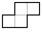
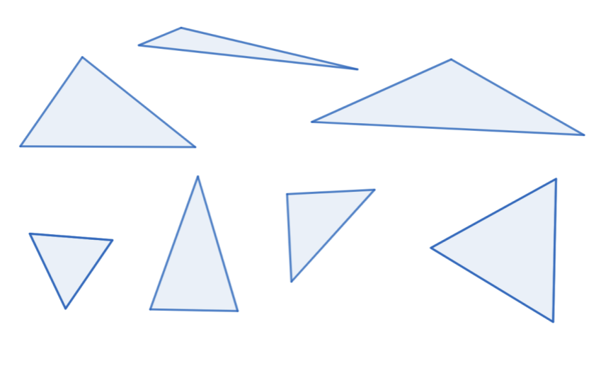
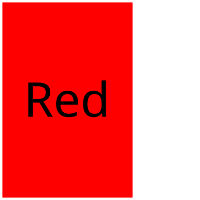
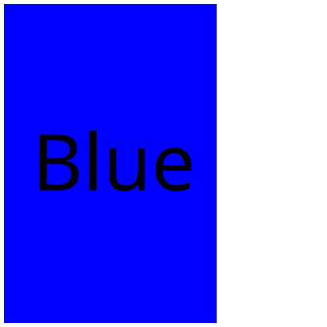
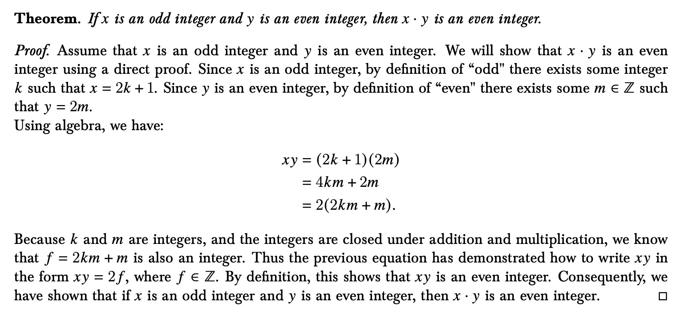

Definition 1.1.
A perfect cover of an \(m\times n\) board with \(2\times 1\) dominoes is an arrangement of those dominoes on the chessboard with no squares left uncovered, and no dominoes stacked or left hanging off the end.

A mathematician, like a painter or a poet, is a maker of patterns. If her patterns are more permanent than theirs, it is because they are made with ideas. The mathematician’s patterns, like the painter’s or the poet’s, must be beautiful; the ideas, like the colours or the words, must fit together in a harmonious way. Beauty is the first test: there is no permanent place in the world for ugly mathematics.―G. H. Hardy (1877 - 1947)



